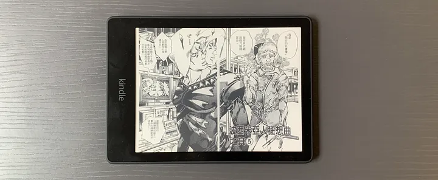

最近把買了一年的文石 Note5 電子閱讀器賣掉，忍不住誘惑還是買了一台 Kindle Paperwhite 5，這算是我人生中買的第三台 Kindle（第一台逛通化街被偷，不得不說小偷很有品味，第二台則是因為當時有文石，所以就送給需要的親友）。
使用文石的這一年來，內心始終忘不了當年第一次打開 Kindle 小朋友在樹下看書那 e-Ink 黑白分明的畫面帶給我的感動，雖然文石和 Kindle 的解析度或是 spec 幾乎都差不多，但 Kindle 灰階的層次真的讓整個畫面的細緻度呈現十萬八千里。讓我再也不想管什麼開放式系統，什麼哪一家電子書格式都可以看之類的便利性。
那種感覺有點像是有交往對象，但不停想著前任種種的好，最後決定把現任賣掉，把這段時間好幾年沒見，已經變成前任 2.0 買回來的概念（離題了）。
為什麼離開文石
還是忍不住抱怨一下，文石功能多到選單有巨量的 icon，然後每一個 icon 都要點點看才知道這個在幹嘛，使用者體驗非常難用，然後很多功能一陣子沒用又會忘記，需要複習，我甚至之前還寫了一篇文石怎麼儲存筆記的文章，感覺隨時會失憶需要查詢，使用起來非常不直覺，適合記憶力好的使用者。另外換頁的時候，很容易有上一頁的殘影，常常需要手動去重新整理，讓人也有點煩躁。
不過文石那台外表真的很精緻，金屬外殼 10.3 吋，只是不太適合帶出門，有點重，也不適合單手持。之前把大螢幕看書想的太美好，但實際使用還是小一點的比較方便，譬如想邊吃飯邊看書，10.3 吋真的需要把他架起來，但 6.8 吋就是可以左手拿書，右手拿筷子，左右開弓很方便。
實體書好還是電子書好
關於看實體書好還是電子書好這個萬年話題，還是忍不住想講一下，我自己是非常愛紙本書，也很愛紙的觸感，還有可以隨時翻來翻去的快感。有的時候在研究同一個主題的時候，我會把三、四本書提到的同一個主題，同時攤開在書桌上對照不同作者的看法解讀，單一台電子書要做到這個程度跟爽感，其實有點困難。之前有一些研究也提過，實體書比較適合深度閱讀，所以假如是一些需要吸收知識，反覆翻閱印證思考類的書籍，還是大堆實體書。
有的人可能會覺得電子書比較好做筆記，但我個人認為，假如書裡面的這句話，你真的打從心底喜歡到想刻進你的腦海裡，不如就用紙筆寫下來吧，真的會比打字印象深刻。當然如果是為了要準備報告或是其他需要快速輸出的狀況例外。
所以電子書的用途就會是被我拿來看小說漫畫，偏向線性閱讀的書籍，不需要一直來回翻閱的場景。
另外一個意外收穫是，本來買這台 Kindle 沒有期待可以拿來看漫畫，之前用 Kindle 看漫畫的經驗不太好，會看到眼睛脫窗。但這次 Kindle Paperwhite 和之前的版本比，有升級到 6.8 寸螢幕 300dpi，漫畫解析度是真的會感動的程度。
如何獲得 Kindle 繁體書
至於 Kindle 繁體書本來源，現在 Amazon 已經有上千本繁體書，只要是近期的新書幾乎都有，但因為 Amazon 的中文搜尋做的不是很好，同樣的書名在 Amazon 搜尋會找不到，建議到 (goodreads)[https://www.goodreads.com/] 裏面查詢書籍再直接連到 Amazon 購買。
還有一個網站叫好讀，裡面超多免費經典小說，雖然有點舊，但也是因為舊，所以比較沒有版權問題，裡面金庸、倪匡、東野圭吾、史蒂芬金可以看好幾年都重溫不完。
看漫畫的話，除了正規做法，去 Amazon 買來看之外，推薦一個網站 (Mox.moe)[https://kox.moe/] 裡面有超多漫畫，還可以直接 push 到 Kindle 方便的要命，要注意的是，每個月有限制下載容量，超過要付錢，但我自己是覺得很夠用了。
假如你原本就有一堆 epub 檔案的電子書，也不用擔心換到 Kindle 不能看，可以下載 (Calibre)[https://calibre-ebook.com/download] (支援 Wins/Mac)，直接拖拉檔案到 Kindle 就可以看了。

現在 Kindle 還買不到一個月，目前被我拿來看 JoJo 冒險野郎 — 石之海，如火如荼中，邊吃飯邊看還可以單手拿，非常開心，有人有使用 Kindle 或其他電子書的心得或問題，也歡迎跟我分享討論。